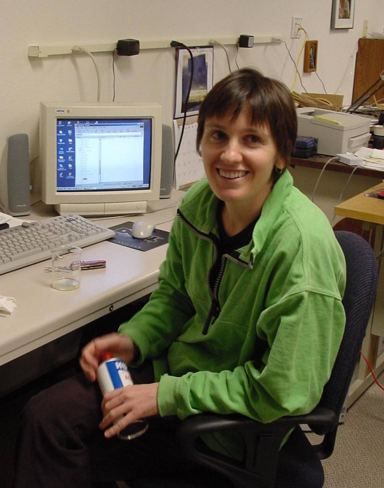

Sarah Codd
| Sarah received her Ph.D in Physics from
the University of Kent at Canterbury, UK in 1996 under the supervision of J. H. Strange. Since then she has held a two year NZ Science and
technology Fellowship in P. T. Callaghan’s laboratory in New Zealand and a 1 year
Humboldt fellowship in R. K. Kimmich’s laboratory in Ulm, Germany. She is currently employed as a post-doctoral
fellow with New Mexico Resonance. |
 |
Articles in peer-reviewed
journals/contributions to books
1. Codd, S.L., Pack, R.J., Lambert, R.K. and Alley, M.R. (1994): Tensile stiffness of ovine tracheal wall. J. Appl. Physiol. 76(6), 2627-2635.
2. Lambert, R.K., Codd, S.L., Pack, R.J. and Alley, M.R. (1994): Physical determinants of bronchial mucosal folding. J. Appl. Physiol. 77(3), 1206-1216.
3. Mallett, M.J.D, Codd, S.L., Halse, M.R., Green, T.A.P. and Strange, J.H. (1996): Three-dimensional NMR imaging using large oscillating field gradients. J. Magn. Res. 119, 105-110.
4. Codd, S.L., Mallett, M.J.D, Halse, M.R., Strange, J.H., Vennart, W. and Van Doorn, T. (1996): A Three-dimensional NMR Imaging Scheme utilising doubly-resonant gradient coils. J. Magn. Res. 113, 214-221.
5. Codd, S.L. and Callaghan, P.T. (1998): Generalised Treatment of Modulated Gradient Spin Echo Attenuation for Restricted Diffusion in Spherical Pores. In: Spatially Resolved Magnetic Resonance: Methods and applications in Materials Science, Agriculture and Biomedicine, Eds. B.Blümich, P.Blümler, R.Botto and E.Fukushima.(VCH, Weinheim) Chap. 47, p489-497.
6. Callaghan, P.T. and Codd, S.L. (1998): Generalised calculation of NMR imaging edge effects arising from restricted diffusion in porous media. Magn. Reson. Imaging, 16, 471-478.
7. Codd, S.L. and Callaghan, P.T. (1998): Spin echo analysis of restricted diffusion under generalised gradient waveforms: planar, cylindrical and spherical pores, with wall relaxativity, J. Magn. Res., 147, 358-372.
8. Callaghan, P.T., Codd, S.L., and Seymour, J. (1999): Spatial coherence phenomena arising from translational spin motion in Gradient Spin Echo experiments, Concepts of Magnetic Reson., 11(4), 181-202.
9. Codd, S.L., Manz, B., Seymour, J.D and Callaghan, P.T. (1999): Taylor Dispersion and molecular displacements in Poiseuille Flow. Phys. Rev. E., 60(4), 3491-3494.
10. Callaghan, P.T. and Codd, S.L. (2000): Flow coherence in a bead pack observed using Frequency Domain Modulated Gradient NMR. (submitted to Phys. Fluids.).
11. Callaghan, P.T. and Codd, S.L. (2000): Generalised
gradient spin echo analysis of restricted diffusion in
interconnected pores: Application of pore hopping theory (in preparation).